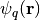
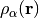
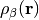
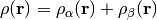
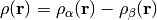
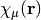
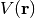
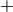

cubeprop() Generation of cube files¶
Code author: Robert M. Parrish and Francesco A. Evangelista
Section author: Francesco A. Evangelista
-
cubeprop(wfn)[source]¶ Evaluate properties on a grid and generate cube files.
New in version 0.5: wfn parameter passed explicitly
Returns: None Parameters: wfn (Wavefunction) – set of molecule, basis, orbitals from which to generate cube files Examples: >>> # [1] Cube files for all orbitals >>> E, wfn = energy('b3lyp', return_wfn=True) >>> cubeprop(wfn)
>>> # [2] Cube files for density (alpha, beta, total, spin) and four orbitals >>> # (two alpha, two beta) >>> set cubeprop_tasks ['orbitals', 'density'] >>> set cubeprop_orbitals [5, 6, -5, -6] >>> E, wfn = energy('scf', return_wfn=True) >>> cubeprop(wfn)
Introduction¶
Psi4 has the ability to export cube files that store information about basis functions, molecular orbitals, the electron density, and the electrostatic potential (ESP). Cube files store the value of a scalar quantity on a regular Cartesian grid, and can be visualized with several visualization programs, some of which are free, like VMD (http://www.ks.uiuc.edu/Research/vmd/).
An example utilization of the code is:
molecule h2o {
0 1
O
H 1 1.0
H 1 1.0 2 104.5
}
set basis cc-pvdz
set scf_type df
set freeze_core True
set cubeprop_tasks ['orbitals']
set cubeprop_orbitals [5,6,-5,-6]
E, wfn = energy('scf', return_wfn=True)
cubeprop(wfn)
In this example, the cubeprop()
call after the energy('scf') command
executes the cubeprop code. The array CUBEPROP_TASKS specifies which
tasks should be executed. In this case the task 'orbitals' generates cube
files for orbitals. The CUBEPROP_ORBITALS option specifies that cube files
should be generated only for alpha orbitals 5 (HOMO) and 6 (LUMO) and
beta orbitals 5 (indicated as -5) and 6.
If the option CUBEPROP_ORBITALS is not provided, then cube files are
generated for all orbitals.
After running, the above input will generate four files: Psi_a_5.cube,
Psi_a_6.cube, Psi_b_5.cube, and Psi_b_6.cube.
Note
If your cube plots are too coarse, try to decrease the grid spacing via the option CUBIC_GRID_SPACING. If the edges of your plot are cut then increase the size of the grid via the option CUBIC_GRID_OVERAGE.
Cubeprop Tasks¶
The cubeprop utility can be provided a list of tasks to perform. Tasks are specified by the CUBEPROP_TASKS option, which is a list of strings that identify the tasks. Several tasks are available. These include:
- ORBITALS [Default if CUBEPROP_TASKS is not specified]
- Produces cube representations of the molecular orbitals . Orbitals are sorted according to increasing orbital energy ignoring symmetry.
- DENSITY
- This task can be used to obtain the alpha and beta electron densities,  and , together with the total density , and the spin density .
- BASIS_FUNCTIONS
- This task is useful to produce cube files of the atomic orbital basis functions .
- ESP
- Calculates the total (nuclear + electronic) electrostatic potential .
Note
The ESP task requires the user to specify a density-fitting basis
via the DF_BASIS_SCF keyword.
Warning
It is important to specify the CUBEPROP_ORBITALS option when dealing with large molecules to avoid running out of disk space. For example, using the default grid spacing of 0.2 Ångström, the size of a single cube file for a molecule like water is of the order of 1.4 MB. For a molecule with 200 basis functions, the cube files for all the orbitals occupy more than half a GB.
Keywords¶
CUBEPROP_TASKS¶
Properties to compute. Valid tasks include:
DENSITY- Da, Db, Dt, DsESP- Dt, ESPORBITALS- Psi_a_N, Psi_b_NBASIS_FUNCTIONS- Phi_NLOL- LOLa, LOLbELF- ELFa, ELFb
- Type: array
- Default: No Default
CUBEPROP_FILEPATH¶
Directory to which to write cube files. Default is the input file directory.
- Type: string
- Default: No Default
CUBEPROP_ORBITALS¶
List of orbital indices for which cube files are generated (1-based,  for alpha, for beta). All orbitals computed if empty.
- Type: array
- Default: No Default
CUBEPROP_BASIS_FUNCTIONS¶
List of basis function indices for which cube files are generated (1-based). All basis functions computed if empty.
- Type: array
- Default: No Default
CUBIC_GRID_SPACING¶
CubicScalarGrid grid spacing in bohr [D_X, D_Y, D_Z]. Defaults to 0.2 bohr each.
- Type: array
- Default: No Default
CUBIC_GRID_OVERAGE¶
CubicScalarGrid spatial extent in bohr [O_X, O_Y, O_Z]. Defaults to 4.0 bohr each.
- Type: array
- Default: No Default
Orbital Visualization with VMD¶
Included in Psi4 is functionality to automatically render specified surfaces, including molecular orbitals, densities, and basis functions, using VMD. The vmd_cube.py script takes the .cube files generated in a calculation and generates images alinged with user-input specifications. The script is located in psi4//share/scripts/vmd_cube.py.
Script Prerequisites¶
- VMD must be installed, and it can be downloaded for free at (http://www.ks.uiuc.edu/Research/vmd/). Additionally,
the script needs to know where to find the VMD executable, and this is defined as
VMDPATH. VMDPATH must be defined as an environment variable. - To generate images with multiple surfaces, ImageMagick must also be installed. ImageMagick is a free program which can be installed using homebrew/pip or from http://www.imagemagick.org/script/binary-releases.php .
- With ImageMagick installed, an environment variable called
MONTAGEneeds to be created which points to the montage executable. This executable can be found in the /bin/ sub-directory wherever ImageMagick was installed.
Running the Script¶
Run a Psi4 calculation, generating .cube files as detailed in the above documentation.
Copy vmd_script.py into a directory where the image files are desired, and pass the directory pointing to the .cube files as an argument to run:
python vmd_cube.py /path/to/cube/files/
Alternatively, the script can be run in the same directory as the cube files with no need to pass the directory as an argument.
For an additional image containing all surfaces in an array (very useful for hand-picking orbital spaces), set the montage flag to True:
python vmd_cube.py /path/to/cube/files/ --montage=True
As an example, take the cube files generated from the water calculation from the above input file. Using the script and montage, the alpha molecular orbitals, for example, can be rendered and output in one image with:
python vmd_cube.py /path/to/cube/files/ --montage=True --opacity=0.5 --rx=90 --ry=60
The desired image in this case is called “AlphaMOs.tga”, and looks like this:

Script Options¶
>>> ./vmd_cube.py --help
usage: vmd_cube.py [-h] [--color1 [<integer>]] [--color2 [<integer>]]
[--iso [<isovalue>]] [--rx [<angle>]] [--ry [<angle>]]
[--rz [<angle>]] [--tx [<angle>]] [--ty [<angle>]]
[--tz [<angle>]] [--opacity [<opacity>]]
[--scale [<factor>]] [--montage [MONTAGE]]
[--imagesize [<integer>]] [--fontsize [<integer>]]
[<cubefile dir>]
.
vmd_cube is a script to render cube files with vmd. To generate cube files
with Psi4, add the command cubeprop(wfn) at the end of your input file, where
*wfn* is a Wavefunction object that may be retrieved from any calculation and
used following the pattern "ene, wave = energy('pbe', return_wfn=True)\n
cubeprop(wave)".
.
positional arguments:
<cubefile dir> The directory containing the cube files.
.
optional arguments:
-h, --help show this help message and exit
--color1 [<integer>] the color ID of surface 1 (integer, default = 3)
--color2 [<integer>] the color ID of surface 2 (integer, default = 23)
--iso [<isovalue>] the isosurface value (float, default = 0.05)
--rx [<angle>] the x-axis rotation angle (float, default = 30.0)
--ry [<angle>] the y-axis rotation angle (float, default = 40.0)
--rz [<angle>] the z-axis rotation angle (float, default = 15.0)
--tx [<angle>] the x-axis translation (float, default = 0.0)
--ty [<angle>] the y-axis translation (float, default = 0.0)
--tz [<angle>] the z-axis translation (float, default = 0.0)
--opacity [<opacity>]
opacity of the isosurface (float, default = 1.0)
--scale [<factor>] the scaling factor (float, default = 1.0)
--montage [MONTAGE] call montage to combine images. (string, default =
false)
--imagesize [<integer>]
the size of each image (integer, default = 250)
--fontsize [<integer>]
the font size (integer, default = 20)